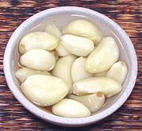

|
Pickled GarlicThailand - Kratiem Dong | Ka Thiem Dog (pickle juice) | ||||
| Makes: Effort: Sched: DoAhead: |
8 oz ** 1 week Must |
Pickled Garlic is an important ingredient in Thailand. It can be purchased in jars from markets serving a Southeast Asian community, and is also easily made at home, though a little differently, see Comments. | |||
|
8 ----- 1/2 2 2 1/2 ----- |
oz --- c c T T --- |
Garlic Heads -- Pickle Vinegar (1) Water Sugar Sea Salt ------------- |
Make - (1 week - 15 min work)
|